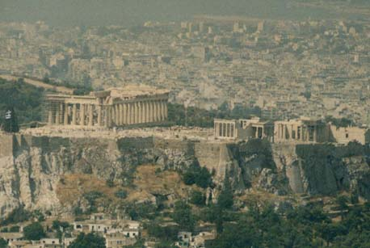

３０．「やさしいバスの運転手さんとご婦人（ギリシャ）」(写真有)
|
 行きはよいよいでアテネ市内からタクシーでリカベトスの丘への上り口に来た。帰りはタクシーに乗って帰ろうと考 えていた。ここからは登山電車みたいな電車にのりリカベトスを登る。高さは正確には分からないが数百メートルはあ る、ここからの眺めが良いと言われている。ここでパルテノン神殿を撮ろうと思い来た。期待通りの眺めで無事写真も 取れた。登山電車を降りて帰ろうとしたら、タクシーは居ない。バスがある事が分かり、乗ってみる事にした。運転手 に行き先を言う、「シンタグマ広場」、何か言っていたが分からない。お金を払おうとしたら、３０ドラクラマ。手持 ちの小銭は１００ドラクラマ、運転手はおつりがないから駄目だと言う。乗り合わせの客に１００ドラクラマを崩して もらえないか、頼む。誰も居ない。もう一度運転手に釣りは要らないからと言い１００ドラクマを入れようとするが、 手で運賃箱を塞いでしまう。再度乗客に頼んでみた、今度はご婦人が３０ドラクラマ寄付してくれた。何とか１００ドラクラマを受け取るようにお願い したが受け取ってもらえなかった。仕方なくご寄付をしていただく事になった。しばらく、バスは走り、あるところで 運転手が盛んに隣のバス運転手と話をしている、何となく私の事のようである。このバスがシンタグマ広場行きらしい、 それに乗るように教えてくれた。お金は払っているので要らないと教えてくれた。多分最初から乗換してシンタグマ広 場に行けるように考えてくれたのだろう。運転手さん、寄付してくれたご婦人に感謝しています。 どこの国にも優しく情の熱い人が居ると実感する、嬉しい一時でした。 |